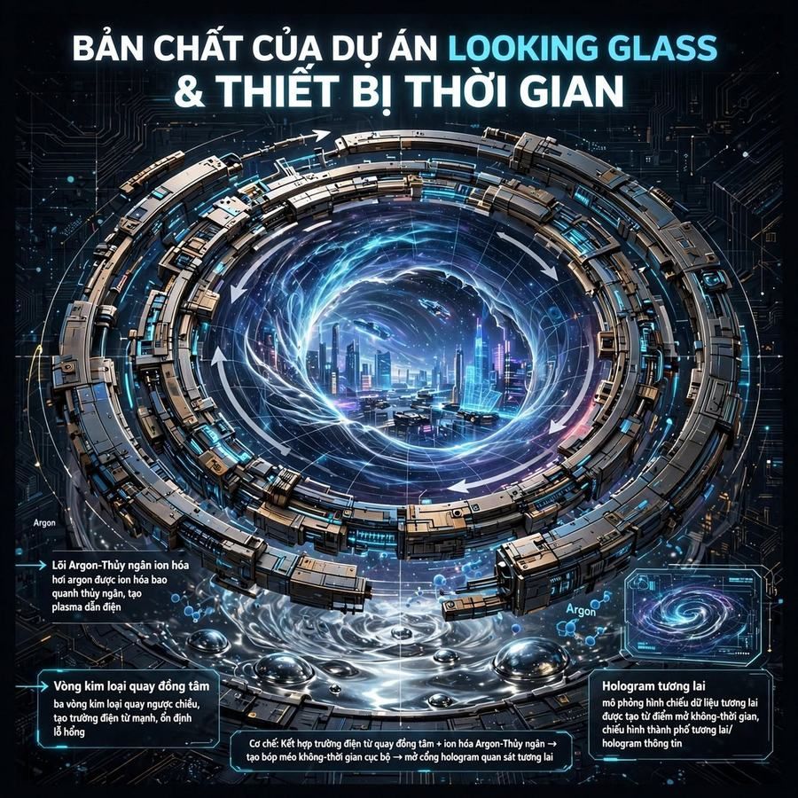
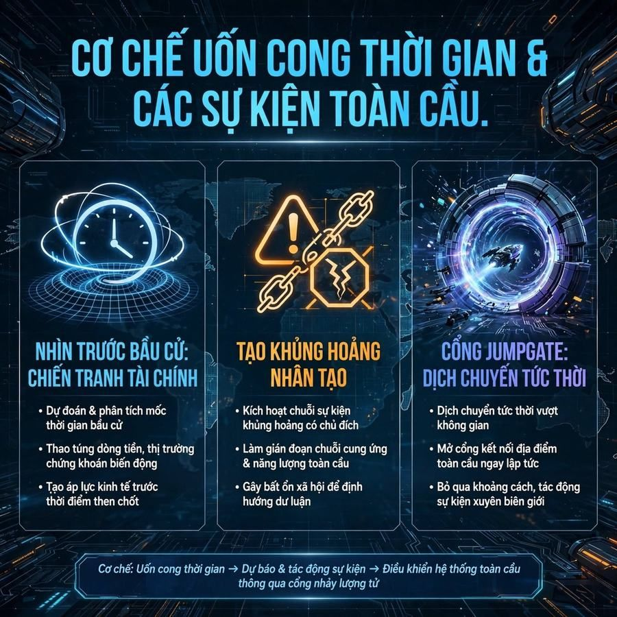
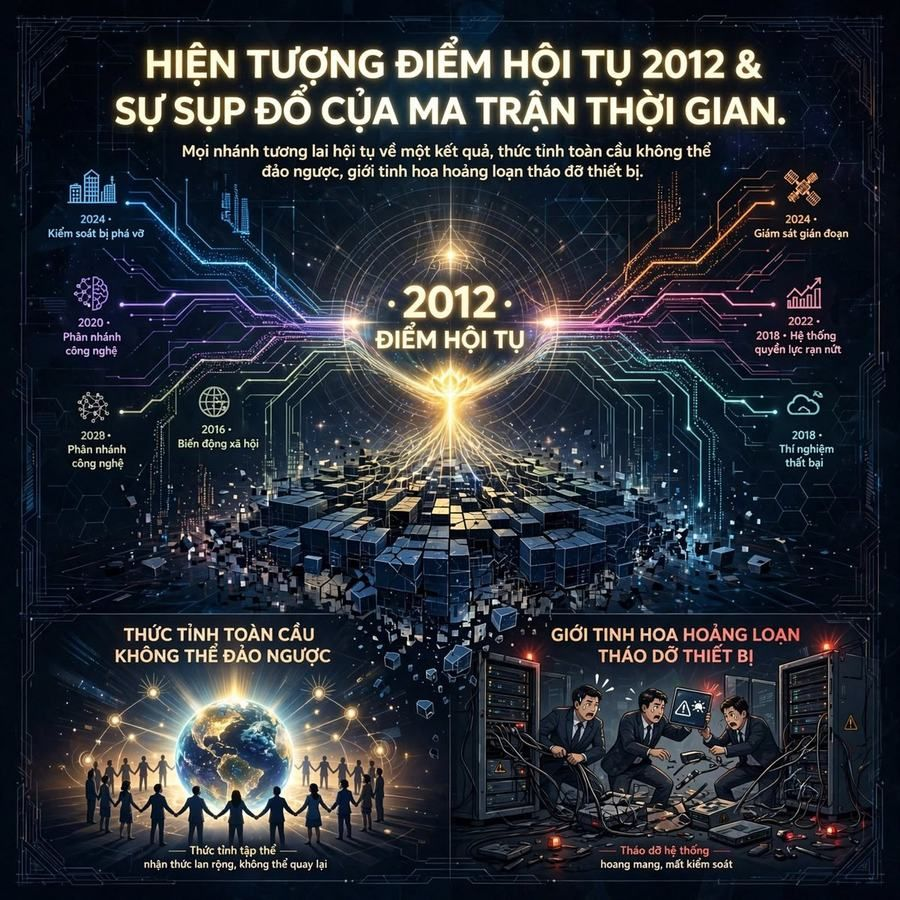
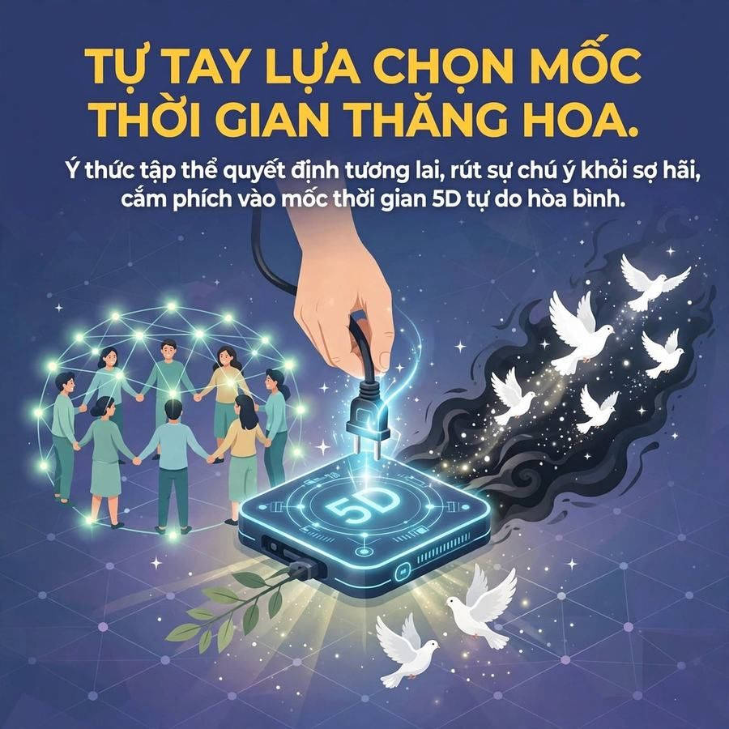

Trang chủ / Chuyên đề 5: Chương Trình Không Gian Bí Mật / Kỳ 45
Chuyên đề 5 · Kỳ 45 / 90
CÔNG NGHỆ DU HÀNH THỜI GIAN LƯỢNG TỬ & DỰ ÁN LOOKING GLASS (PROJECT LOOKING GLASS) ⏳

Ở Kỳ 4, chúng ta đã cùng nhau khám phá Trạm Chỉ Huy Vận Hành Mặt Trăng (LOC), vùng tối Mặt Trăng cùng quy trình thần kỳ của chương trình "20 năm phục vụ và trẻ hóa" (20-and-Back). Hôm nay, chuyến du hành giải mã các chương trình không gian bí mật sẽ đưa chúng ta chạm đến một trong những mảng công nghệ siêu việt, bí ẩn và gây kinh ngạc nhất từng được phát triển trong bóng tối: Công nghệ Du hành Thời gian Lượng tử & Dự án Looking Glass (Project Looking Glass)! Nếu như du hành không gian giúp con người vượt qua khoảng cách địa lý giữa các hành tinh, thì công nghệ du hành thời gian lại cho phép các thế lực kiểm soát nhìn xuyên qua bức màn quá khứ và tương lai. Dự án Looking Glass là gì và được xây dựng dựa trên những thiết bị ngoài hành tinh thu giữ được ra sao? Cơ chế uốn cong dòng thời gian và dự đoán các nhánh xác suất tương lai (Timeline Probabilities) vận hành như thế nào? Tại sao phe kiểm soát bóng tối lại liên tục lạm dụng thiết bị này để thao túng địa chính trị, bầu cử và các sự kiện toàn cầu? Sự thật đằng sau hiện tượng "Điểm Hội Tụ Mốc Thời Gian" (Timeline Convergence) khiến mọi dự đoán thao túng tương lai của phe bóng tối hoàn toàn bị vô hiệu hóa ra sao? Và bài học thức tỉnh nào giúp nhân loại tự tay lựa chọn Mốc Thời Gian Thăng Hoa (Ascension Timeline) cho chính mình?
1. BẢN CHẤT CỦA DỰ ÁN LOOKING GLASS & THIẾT BỊ THỜI GIAN OUT-OF-THIS-WORLD
Dự án Looking Glass là tên mã của một chương trình nghiên cứu lượng tử tối mật được vận hành tại căn cứ S4 (gần Area 51, Nevada) và các phòng thí nghiệm ngầm của tổ hợp công nghiệp không gian bí mật. A. Nguồn Gốc Từ Các Thiết Bị Bò Sát & Người Xám Thu Được
- Mô-đun Định Vị Không-Thời Gian Cổ Đại: Thiết bị nòng cốt của Looking Glass được đảo ngược công nghệ từ các ổ đĩa động cơ lượng tử và thiết bị định vị thu giữ được từ các đĩa bay rơi (như sự kiện Roswell) và công nghệ được trao đổi từ các thực thể Bò sát/người Xám.
- Cấu Trúc Vòng Xoay Điện Từ Thạch Anh: Thiết bị bao gồm một chuỗi các vòng kim loại quay đồng tâm bao quanh một vùng không khí được nạp năng lượng argon/thủy ngân. Khi các vòng quay đạt tốc độ cực đại và được kích hoạt bởi trường vô hướng, một lỗ hổng không-thời gian (Wormhole / Portal) sẽ được mở ra ở tâm thiết bị. B. Màn Hiển Thị Tương Lai Ba Chiều (3D Holographic Display)
- Quan Sản Các Nhánh Xác Suất Tương Lai: Looking Glass không chỉ phát ra hình ảnh phẳng, mà chiếu ra một khối không gian Hologram ba chiều. Người vận hành có thể điều chỉnh tần số để quan sát các viễn cảnh sự kiện sẽ xảy ra trong tương lai dựa trên các quyết định ở hiện tại.

2. CƠ CHẾ UỐN CONG THỜI GIAN & THAO TÚNG CÁC SỰ KIỆN TOÀN CẦU
Việc nắm giữ khả năng nhìn thấy tương lai đã trao cho giới tinh hoa kiểm soát một lợi thế thao túng khổng lồ trong suốt nhiều thập kỷ. A. Nhìn Trước Kết Quả Để Thao Túng Địa Chính Trị
- Đi Trước Một Bước Trên Bàn Cờ: Bộ máy ngầm đã sử dụng Looking Glass để quan sát kết quả của các cuộc chiến tranh, biến động tài chính, kết quả bầu cử và các phong trào xã hội từ nhiều năm trước khi chúng diễn ra.
- Tạo Ra Các Sự Kiện Nhân Tạo: Nếu nhìn thấy một xác suất tương lai bất lợi cho bộ máy cai trị, họ sẽ lập tức triển khai các chiến dịch tâm lý (Psyops), tạo ra các cuộc khủng hoảng nhân tạo trên bề mặt để bẻ cong dòng thời gian về hướng có lợi cho phe bóng tối. B. Công Nghệ Cấy Ghép Ký Ức & Cổng Thời Gian Nhân Tạo (Stargate)
- Dịch Chuyển Tức Thời Qua Cổng Thời Gian: Công nghệ Looking Glass kết hợp với các Cổng Sao nhân tạo (Cổng Jumpgate) cho phép đưa quân nhân và thiết bị dịch chuyển tức thời xuyên không gian và thời gian đến các căn cứ trên Sao Hỏa hay các thời kỳ lịch sử khác nhau.

3. HIỆN TƯỢNG "ĐIỂM HỘI TỤ 2012" & SỰ PHÁT PHÁT CỦA MA TRẬN THỜI GIAN
Dù sở hữu công nghệ xem trước tương lai vô cùng tinh vi, phe kiểm soát bóng tối đã phải đối mặt với một hiện tượng lượng tử kỳ lạ làm chấn động toàn bộ các nhà khoa học SSP. A. Mọi Nhánh Tương Lai Đều Dẫn Về Một Kết Quả Duy Nhất
- Sự Cố Dự Đoán Khi Đến Gần Kỷ Nguyên Mới: Từ đầu những năm 2000, khi các kỹ sư Looking Glass nhập dữ liệu để xem tương lai qua mốc năm 2012 và chặng đường tiếp theo, thiết bị bắt đầu xuất hiện lỗi kỳ lạ: Dù phe bóng tối có cố gắng thay đổi hay thao túng kịch bản ra sao, mọi nhánh xác suất tương lai đều hội tụ về cùng một kết quả duy nhất!
- Sự Thức Tỉnh Toàn Cầu Không Thể Đảo Nược: Kết quả duy nhất đó chính là Sự Thức Tỉnh Tâm Thức Toàn Cầu Của Loài Người Trái Đất và sự sụp đổ vĩnh viễn của ma trận kiểm soát tiêu cực! B. Sự Hoảng Loạn Của Giới Tinh Hoa Bóng Tối
- Ma Trận Thao Túng Bị Tê Liệt: Nhận ra rằng sự thăng hoa tần số của Trái Đất là một quy luật vũ trụ bất biến không thể bị bẻ cong bằng công nghệ, phe bóng tối rơi vào hoảng loạn và buộc phải tháo dỡ, cất giấu các thiết bị Looking Glass để tránh việc công nghệ này rơi vào tay Lực lượng Liên minh.

4. TỰ TAY LỰA CHỌN "MỐC THỜI GIAN THĂNG HOA" (ASCENSION TIMELINE)
Sự thất bại của Dự án Looking Glass mang lại cho mỗi chúng ta một bài học nhận thức tối cao về bản chất của Thời Gian và Ý Thức. A. Thời Gian Không Phải Cố Định, Thời Gian Là Sự Lựa Chọn
- Quyền Quyết Định Nằm Ở Ý Thức Tập Thể: Tương lai của Trái Đất không bị ấn định bởi bất kỳ máy tính lượng tử hay thế lực ngoài hành tinh nào. Tương lai được quyết định bởi Tổng Tần Số Nhận Thức & Ý Thức Tập Thể của hàng tỷ con người Trái Đất trong từng khoảnh khắc hiện tại! B. Kích Hoạt Mốc Thời Gian Ánh Sáng 5D
- Rút Lại Sự Chú Ý Khỏi Kịch Bản Sợ Hãi: Khi bạn từ chối tin vào các kịch bản tận thế hay sự sợ hãi mà ma trận truyền thông gieo rắc, bạn đang trực tiếp ngắt kết nối khỏi mốc thời gian tiêu cực và tự tay "cắm phích" bản thể vào Mốc Thời Gian Thăng Hoa 5D (Timeline of Freedom & Peace)!

5. LỜI KẾT KỲ 5: BẬC THẦY CỦA DÒNG THỜI GIAN CHÍNH LÀ BẠN
Kỳ 5 của chuyên đề 5 khép lại mang đến lời thức tỉnh kiêu hãnh về sức mạnh nội tại:
- Công Nghệ Không Thể Thắng Được Tâm Thức: Dự án Looking Glass đã chứng minh rằng: Mọi công nghệ du hành thời gian tinh vi nhất cũng phải bế tắc trước sự thức tỉnh từ Luân Xa Tim và Tình Yêu Thương của loài người!
- Sống Trọn Vẹn Trong Hiện Tại: Bạn không cần phải lo lắng hay tìm kiếm tương lai ở đâu xa. Bằng việc sống tỉnh thức, yêu thương và giữ vững tần số bình thản ngay lúc này, bạn đang kiến tạo nên một tương lai rực rỡ nhất cho Quê hương Trái Đất!